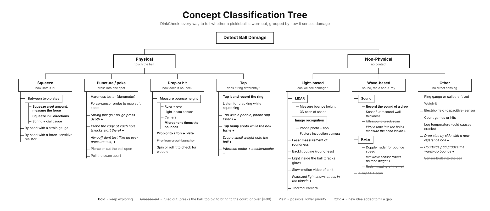

Gate Review 2 · Concept & Prototyping
Concept Tree
Our research showed that most ball damage is hidden: a ball keeps being played for many games after it plays noticeably worse, because softening cannot be seen [1]. So the tree asks one question at every level: what physical effect does the method use to sense the ball's condition?

How the tree is organized
The tree starts from the product's core function, detect ball damage: telling a player whether a ball still plays as it should, and warning them when it has gone soft. The first split is whether the method touches the ball. Physical methods measure mechanical properties such as stiffness and rebound directly, but need a fixture and can damage or mis-measure the ball. Non-physical methods are faster and gentler, but most of them only see the outside. Below that, each branch is a different sensing principle, not a different product or brand.
| Branch | Distinguishing principle | What it can detect |
|---|---|---|
| Squeeze | Deform the whole shell and measure the force it takes (stiffness) | Softening, a soft axis |
| Puncture / poke | Press into one small spot and measure local resistance | Local soft spots, weak hole edges |
| Drop or hit | Bounce or strike the ball and measure the energy it returns | Bounce loss, softening |
| Tap | Excite the shell and measure how it vibrates (resonance) | Softening, soft-spot location |
| Light-based | Form an image or shape measurement using light | Roundness, surface wear |
| Wave-based | Send or receive sound, radio or X-rays through or off the ball | Bounce speed, wall thickness |
| Other | Estimate condition from size, use history or temperature instead of measuring damage | Shape, likely wear |
Table 7. Major branches of the concept tree.
Depth varies by branch on purpose: a branch was split further only when there were genuinely different ways to carry it out. Bounce height, for example, can be read by eye, a light beam, a camera, LIDAR or a microphone, while X-ray imaging has no meaningful sub-options.
Advantages and disadvantages of each branch
Squeeze. Squeezing measures stiffness directly, the property that published wear tests show degrading first, about 10% per hour of play in a Franklin X-40 [1]. It also matches the USA Pickleball compression requirement, an average below 43 lbf under ASTM F1888 [2], a method that compresses the ball 0.25 in. and records the peak load [3], so a benchmark is built in. Squeeze testers are proven for tennis and golf balls, and load cells are inexpensive. On the other hand, readings depend on temperature [4], a flexing frame corrupts the measurement, pressing on a hole gives a false reading, a small soft spot barely changes overall stiffness, and the fixture creates a pinch point that must be guarded.
Puncture / poke. Poking finds local soft spots, which matter because worn balls develop spots that can be pressed in by finger [1]. Mapping a whole ball one spot at a time is slow, an uncontrolled probe can damage the ball, and players may distrust a device that pushes into it.
Drop or hit. Bouncing matches how players already judge balls and is the official USA Pickleball test: 30–34 in. of rebound from a 78 in. drop onto granite [2]. The result is easy to trust and explain. It needs a fixed drop height and a hard surface, it is sensitive to temperature, and bounce mixes stiffness with internal damping, so it does not isolate one property. Launching the ball at speed adds space and safety requirements.
Tap. Tapping is the cheapest physical approach and it can show where on the ball a soft spot is. It is also fast. The drawbacks are background noise, the need to calibrate each ball model, and the effect of holes and seams on the signal. A frequency reading is abstract to players, so the device must turn it into a simple grade to earn trust.
Light-based. Light needs no contact, and phones already have cameras, so an app could reach players at almost no hardware cost. But light sees only the surface and shape; it cannot detect softening, the main hidden damage. The team judged hobby-grade LIDAR too coarse to check the 0.020 in. out-of-round tolerance [2], and lighting changes affect results.
Wave-based. Recording the sound of a drop needs only a microphone and pairs naturally with the bounce test. Ultrasound can measure wall thickness but needs couplant gel, which players would find messy. X-ray and radar imaging can see inside the ball, but they are costly laboratory equipment, and X-ray adds radiation-safety and regulatory concerns.
Other. Counting games or logging temperature needs little or no hardware, but it estimates condition instead of measuring it. Wear rates differ about tenfold between ball models [5], so an estimate alone would not earn a player's confidence. A sensor built into the ball would change its mass and could make it non-compliant with equipment rules.
Tradeoffs across the tree
- Technical. Contact methods (squeeze, drop, tap) measure the hidden damage that matters; non-contact methods mostly measure surface and shape. The most informative non-contact options (X-ray, ultrasound scanning) are also the most expensive.
- Customer. Players care most about the result they can trust and the time it takes. Bounce results are intuitive; tap results are powerful but must be translated into a simple grade.
- Manufacturing and business. The producer constraints are a $400 prototype budget, parts buildable in class, and completion this semester. Load cells, microphones and solenoids fit easily; thermal cameras, ultrasonic scanners and X-ray do not.
- Safety. Squeeze fixtures have pinch points, launchers fire a ball at speed, and X-ray involves radiation. Tap and drop methods carry little risk.
- Environmental. An often-repeated industry estimate puts production at about 500 million balls a year, with no primary source found [6]. A device that identifies a ball's true end of life could keep good balls in play longer; destructive tests do the opposite, and every electronic design adds some e-waste of its own.
Branches pursued and branches set aside
The tree was pruned with four filters drawn from the QFD and the producer constraints: the test must not damage the ball; it must be portable enough for courtside use; its parts must cost under $400; and it must be buildable this semester. Among what remained, the team favored methods that detect hidden softening, since players cannot see or feel it.
Promising branches (bold in the tree).
- Tap: tap many spots while the ball turns. The strongest lead for locating a soft spot using low-cost parts.
- Squeeze: plate compression, including in three directions. Measures stiffness directly and ties to the USA Pickleball compression requirement.
- Drop or hit: microphone bounce timing and a force plate. Tie to the bounce requirement and give an intuitive result.
- Wave-based: drop-sound recording. One drop gives softening and bounce cues, and can share a microphone with the bounce timer.
These four can share one microphone, one load cell and one microcontroller, which suggested that a later product could combine them.
Branches set aside (crossed out).
- Destructive tests (piercing or cutting the ball, pulling the seam apart) and weighing: useful for factory sampling, but they destroy the ball or, in the case of weight, barely respond to wear.
- Ball launcher: accurate rebound speed, but not portable and adds safety risk. Kept only as a possible laboratory reference.
- Ultrasound scanning, thermal imaging, radar imaging, X-ray and CT: all exceed the budget, and X-ray adds a safety and regulatory burden.
- A sensor built into the ball: changes the ball and may make it illegal for play.
Methods in plain text, such as image recognition, LIDAR and game counting, remain possible but lower priority, because most cannot detect softening.
Gaps and new ideas
After drawing the first version of the tree (Figure 4), the team reviewed it for sparse branches: branches with few usable ideas, or none aimed at the damage that matters. Five gaps produced twelve new ideas, shown in italics with a + in Figure 8.
| Gap found | New ideas |
|---|---|
| Tap, the lead direction, had only two ideas, and neither could locate a weak spot | Tap many spots while the ball turns; tap with a paddle while a phone app listens; drop a small weight onto the ball for a repeatable tap; excite the ball with a vibration motor and read an accelerometer |
| Half the puncture ideas destroyed the ball, and none probed the edges of the holes | Spring pin with a go/no-go press depth; probe for the edge of each hole; air-puff dent test borrowed from the optometrist's eye-pressure test |
| Wave-based had one usable idea and no affordable way to sense softening | Play a tone into the holes and measure the echo inside the ball; track bounce height with an mmWave sensor |
| No low-cost way to see stress in the shell without contact | Polarized light to show stress in the plastic (and the tone-and-echo idea above) |
| Nothing worked during play; every idea stopped the game for a separate test | Courtside pad that grades the warm-up bounce; drop the ball side by side with a new reference ball (and the paddle tap above) |
Table 8. Gaps in the first tree and the ideas generated to fill them.
The multi-spot tap idea moved straight into the promising set, and its rotating cradle shaped Concept A, the basis of CuPickle. The other new ideas are untested, and some, such as polarized light on an opaque ball, may not work; they are recorded so the design space stays complete.
Connections to the other methods
- Benchmarking of manufacturer quality control contributed the bounce test, compression test, hardness tester, roundness gauges, spin test, wall-thickness gauge, factory inspection cameras and destructive seam tests.
- Patent and prior-art search contributed the two-plate tester with spring and dial gauge, the three-axis squeeze, and resonance tap testing.
- Analogy contributed the air-puff dent test.
- Customer research pointed to soft spots that can be pressed in by finger, to the bounce check players already do, and to the need for a test that fits into play, which exposed the “use during play” gap.
References
- [1] Pickleball Science, “How Many Games Will a Pickleball Last?” Mar. 15, 2023. pickleballscience.org
- [2] USA Pickleball, Equipment Standards Manual, Rev. 3.0, Jan. 2025, rules 2.D.3–2.D.6. usapickleball.org
- [3] U.S. Patent 8,771,114, “Baseball with improved core and enhanced durability” (describes the ASTM F1888 compression-displacement procedure). patents.google.com
- [4] Pickleball Science, “How Does Temperature Affect a Pickleball?” 2024. pickleballscience.org
- [5] Pickleball Science, “DuraFast 40 vs Franklin X-40 Pickleballs,” 2023. pickleballscience.org
- [6] P3 Cares, home page, accessed Sep. 30, 2026. p3pbcares.org; see the waste discussion on Market Research.